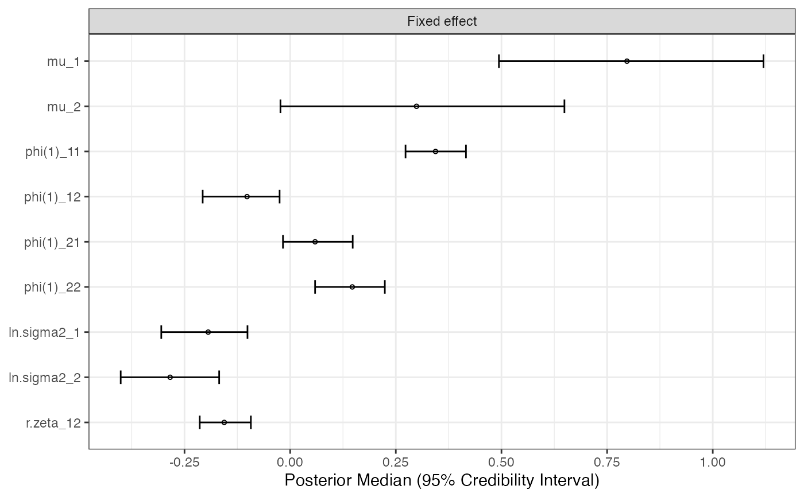

Plot results of mlts
mlts_plot(
fit,
type = c("fe", "re", "re.cor", "int"),
bpe = c("median", "mean"),
what = c("all", "Fixed effect", "Random effect SD", "RE correlation",
"Outcome prediction", "RE prediction", "Item intercepts", "Loading",
"Measurement Error SD"),
sort_est = NULL,
xlab = NULL,
ylab = NULL,
facet_ncol = 1,
dot_size = 1,
dot_color = "black",
dot_shape = 1,
errorbar_color = "black",
errorbar_width = 0.3,
add_true = FALSE,
true_color = "red",
true_shape = 22,
true_size = 1,
hide_xaxis_text = TRUE,
par_labels = NULL,
labels_as_expressions = FALSE
)An object of class mlts.fit
Type of plot.
type = "fe" (Default)
Forest-plot of model coefficients.
type = "re"
Plot of individual (random) effects
type = "int"
Experimental: Plot within-level interactions.
type = "re.cor"
Combined plot depicting the distribution of individual parameter
estimates (posterior summary statistics as provided by bpe), as
well as bivariate scatter plots.
The Bayesian point estimate is, by default, the median of the
posterior distribution (bpe = "median"). Set bpe = "mean" to use
the mean of the posterior distribution as point estimates.
Character. For type = "fe", indicate which parameters should be
included in the plot by setting what to "all" (the default), or one (or multiple)
of "Fixed effect", "Random effect SD", "RE correlation", "Outcome prediction", "RE prediction",
"Item intercepts", "Loading", or "Measurement Error SD".
Add parameter label for sorting of random effects.
Title for the x axis.
Title for the y axis.
Number of facet columns (see ggplot2::facet_grid).
numeric, size of the dots that indicate the point estimates.
character. indicating the color of the point estimates.
numeric. shape of the dots that indicate the point estimates.
character. Color of error bars.
integer. Width of error bars.
logical. If model was fitted with simulated data using mlts_sim,
true population parameter values can be plotted as reference by setting the argument ot TRUE.
character. Color of points depicting true population parameter used in the data generation.
integer. Shape of points depicting true population parameter used in the data generation.
integer. Size of points depicting true population parameter used in the data generation.
logical. Hide x-axis text if set to TRUE.
character vector. User-specified labels for random effect parameters can be specified.
logical. Should parameter names on plot labels be printed
as mathematical expressions? Defaults to FALSE. Still experimental.
Returns a ggplot-object .
# \donttest{
# build simple vector-autoregressive mlts model for two time-series variables
var_model <- mlts_model(q = 2)
# fit model with (artificial) dataset ts_data
fit <- mlts_fit(
model = var_model,
data = ts_data,
ts = c("Y1", "Y2"), # time-series variables
id = "ID", # identifier variable
time = "time",
tinterval = 1 # interval for approximation of continuous-time dynamic model,
)
#> Time series variables as indicated by parameter subscripts:
#> 1 --> Y1
#> 2 --> Y2
#>
#> Note that obtaining (standardized) estimates by cluster,
#> requires settting `monitor_person_pars = TRUE`. However, keeping the default option
#> (`monitor_person_pars = FALSE`) can improve sampling times.
#> Warning: There were 53 divergent transitions after warmup. See
#> https://mc-stan.org/misc/warnings.html#divergent-transitions-after-warmup
#> to find out why this is a problem and how to eliminate them.
#> Warning: There were 1 chains where the estimated Bayesian Fraction of Missing Information was low. See
#> https://mc-stan.org/misc/warnings.html#bfmi-low
#> Warning: Examine the pairs() plot to diagnose sampling problems
#> Warning: The largest R-hat is NA, indicating chains have not mixed.
#> Running the chains for more iterations may help. See
#> https://mc-stan.org/misc/warnings.html#r-hat
#> Warning: Bulk Effective Samples Size (ESS) is too low, indicating posterior means and medians may be unreliable.
#> Running the chains for more iterations may help. See
#> https://mc-stan.org/misc/warnings.html#bulk-ess
#> Warning: Tail Effective Samples Size (ESS) is too low, indicating posterior variances and tail quantiles may be unreliable.
#> Running the chains for more iterations may help. See
#> https://mc-stan.org/misc/warnings.html#tail-ess
# inspect model summary
mlts_plot(fit, type = "fe", what = "Fixed effect")

# }